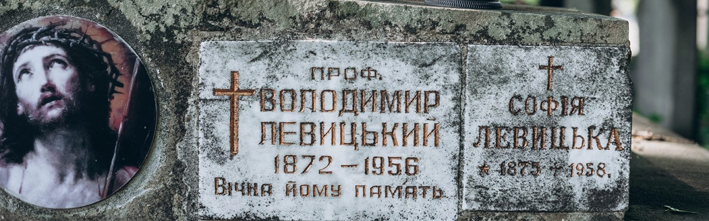
Uncovered Graves. How Lviv restores its memory about the school of mathematics
12.08.26
Small altar lamps with QR codes are placed next to the graves of mathematicians. All you have to do is use your smartphone camera, and instead of dates of birth and death, you uncover stories of people who shaped mathematics in Lviv, Ukraine. Iryna Banakh¹ and Olena Hryniv are the authors of this project. Iryna Banakh works at the Pidstryhach Institute for Applied Problems of Mechanics and Mathematics at the National Academy of Sciences of Ukraine, and Olena Hryniv is a professor in the Faculty of Mechanics and Mathematics at Lviv National University. They are both mathematicians, but in recent years they’ve devoted more and more time to the history of science. They are researching the archives, searching for the burials of mathematicians, communicating with their relatives, and bringing people whose names are often known only to a small circle of historians of mathematics back to the societal memory.
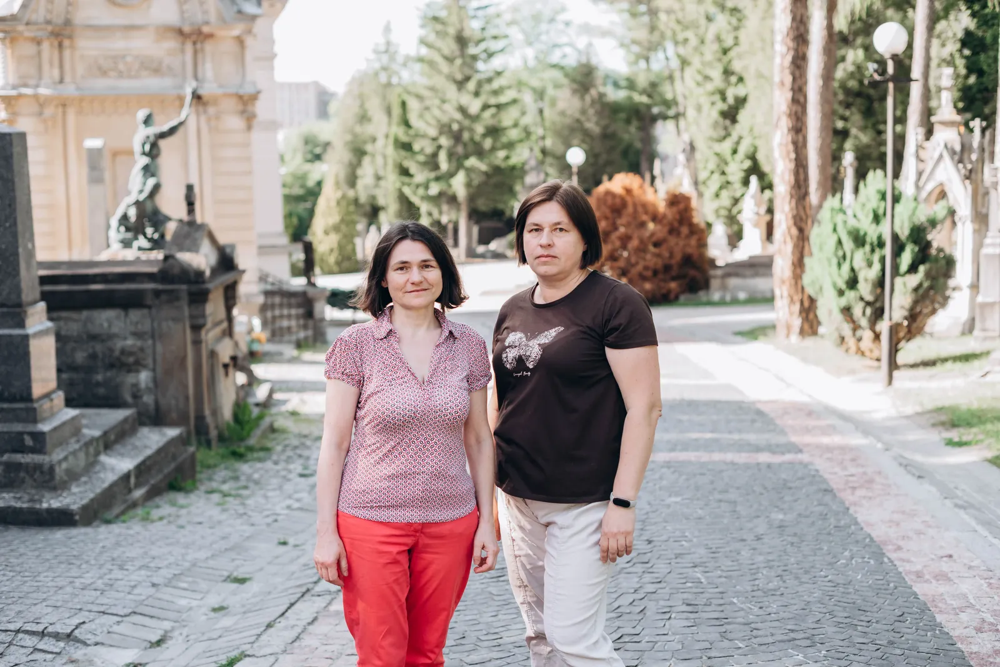
At first, they visited Stefan Banach’s grave at the Lychakiv Cemetery², later Myron Zarytskyi’s; then they began to discover others. This is how the idea emerged to create a special map of burials of Lviv mathematicians, gather their biographies on a website, and then place QR codes next to each grave. Now, anyone can read the biography of a person buried here and discover the whole tour about the Lviv School of Mathematics while visiting the cemetery.
The first to appreciate this weren’t even tourists, but relatives of the mathematicians. For instance, after they placed a QR code at Myron Zarytskyi’s grave, his great-granddaughter, Ustia Soroka, texted the researchers to say that her children were excited to scan the code and read about their great-great-grandpa. Now, Iryna and Olena regularly return to the Lychakiv Cemetery not only as historians of science but also as custodians of their mathematical map of Lviv.
The grave of Józefa Sabatowska, mother of Waleria Sabatowska
This burial is the most recent discovery by the researchers, so instead of the usual route that should start with Banach’s grave, we visit it first to see the discovery. Here, in 1945, Józefa Sabatowska, mother of mathematician Waleria Sabatowska, was buried. Like many educated women of those times, Waleria didn’t have opportunities for an academic career. She became a mathematics teacher instead; teaching was virtually the only way for women to remain in a scientific context.
Not much was known about her until recently. Now, thanks to archival research and contact with relatives, her biography is slowly taking shape. The research is ongoing, and Iryna Banakh and Olena Hryniv plan to dedicate a separate scientific publication to Waleria.
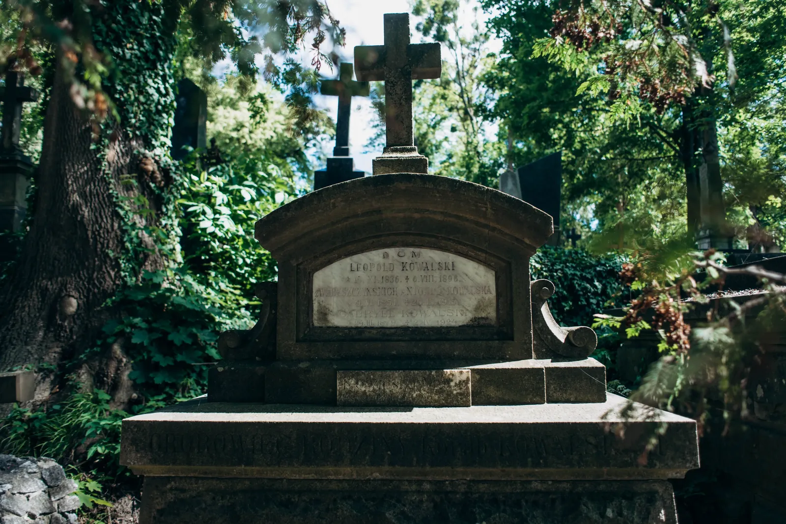
Waleria was one of the few women connected to the Lviv School of Mathematics. Among the over 60 members of the Polish Mathematical Society in Lviv, only seven were women.
At the beginning of the 20th century, there were only four faculties at the Lviv University: Theology, Law, Medicine, and Philosophy. The Faculty of Philosophy was a “faculty of all sciences” in a way: here, future mathematicians, physicists, chemists, historians, philologists, philosophers, etc., were studying. At the end of 1924, it was divided into two faculties — of Mathematics and Natural Sciences, and of Humanities. After that, future mathematicians were studying alongside representatives of other natural sciences, and the humanities received their own faculty.
Stefan Banach and the first altar lamp of the project
Next, we move on to the grave of Stefan Banach, where the researchers have placed their first QR code and memorial lamp. There were two reasons for this. First, his grave is located next to the entrance to the Lychakiv Cemetery, so it was convenient to start the route there.
Second, Stefan Banach was a leader of the Lviv School of Mathematics. He was one of the founding fathers of functional analysis and became a figure of global significance. He was the one who established the legendary meetings of mathematicians at the Scottish Café and the Scottish Book, where they recorded their unsolved mathematical problems and ideas.
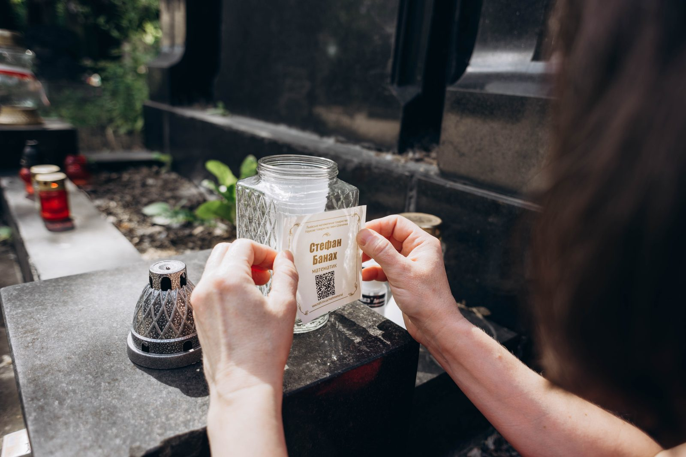
Banach didn’t own a home in Lviv. He spent the last year of his life at the Riedl family’s guesthouse on Svientsitskyi Str., 22. After his death, the mathematician wasn’t buried in a separate grave or vault, but in the Riedl family vault. Today, there’s still an inscription on the plate of the vault that says: “Stefan Banach, university professor.”
Almost everyone who comes to Lviv and is interested in the history of mathematics wants to see Banach’s grave first and foremost. Participants of mathematical conferences, researchers, and professors from other cities and countries pay a visit. That’s why the QR code at his grave became an “entryway” of sorts for the whole project. It isn’t hard to find information about Banach himself, but thanks to the QR code, the visitors discover other representatives of the Lviv mathematical community, whose names are much less known to the wider public.
Olena and Iryna are committed to keeping the memory of Banach alive in other ways, too. Every year, they visit his grave on two symbolic dates: March 30, the mathematician’s birthday, and August 31, the day of his death. They invite their students to participate in these commemorative events. Some join out of curiosity, some want to hear the story of the Lviv School of Mathematics at the Lychakiv Cemetery for the first time.
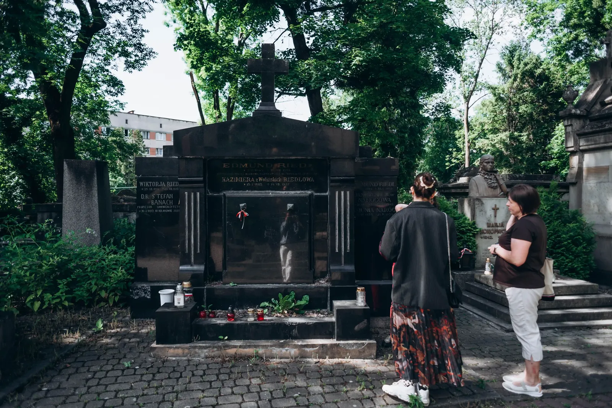
Today, we recognize Stefan Banach as one of the most prominent figures in the global history of mathematics. But even a couple of decades ago, very few people in Lviv heard about him. “The Soviet regime wasn’t interested in recognizing that high mathematics existed here before the Soviet Union,” Iryna Banakh explains. “The impression was being created that the history of science started only with the Soviet era.”
One of the key figures who began bringing this history back from oblivion was Yaroslav Prytula, a mathematician and a science historian. Even in his student years, he began working in libraries and archives, gradually reconstructing biographies of Lviv mathematicians and the history of the Lviv School of Mathematics. His research, in many ways, laid the foundation for the current interest in the topic. According to Iryna, Polish mathematicians often visited Lviv in the 1970s to find Banach’s grave, but almost no one could say where it was. “They were surprised: how can it be that you live in Lviv and don’t know where Banach is buried?”
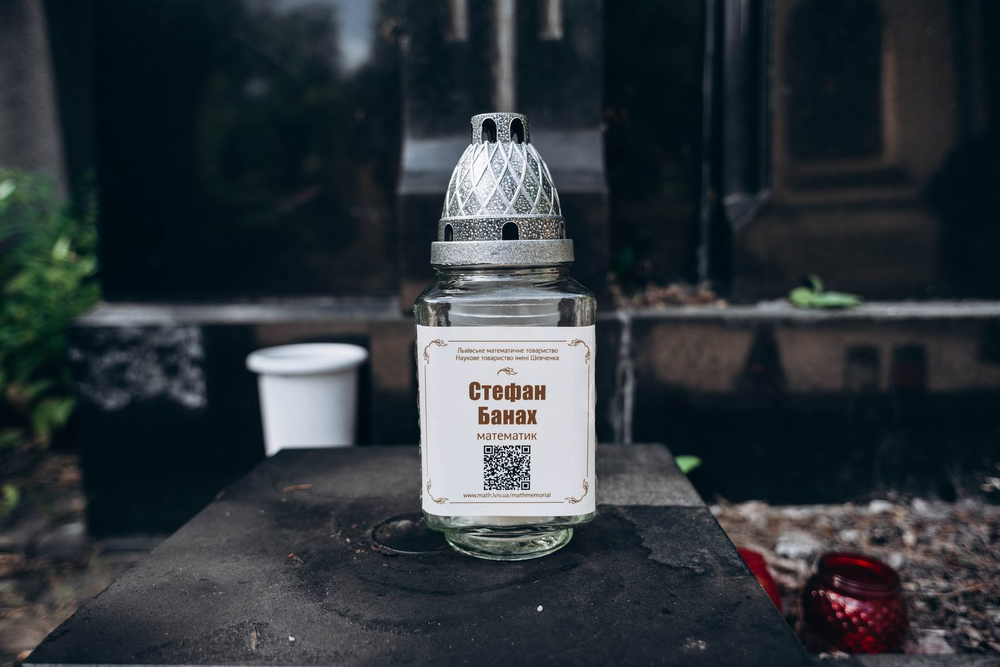
Only after Ukraine regained its independence did regular international mathematical conferences return to Lviv. Scientists from various countries come here more and more often, and visiting Banach’s grave has become almost an indispensable part of their stay.
This interest is what helps tell other stories. By visiting Banach’s grave, visitors learn about his contemporaries, including Myron Zarytskyi. He was the only Ukrainian mathematician to be a simultaneous member of both the Polish Mathematical Society and the Taras Shevchenko Scientific Society, the main Ukrainian scientific institution at that time. Zarytskyi became a link of sorts between the Polish and Ukrainian mathematical communities. We follow the route to his burial.
From one dean to another
On our way from Stefan Banach’s to Myron Zarytskyi’s burial, Iryna jokes that it’s “a road from one dean to another.” Banach headed the faculty, and Zarytskyi was his deputy; after Banach’s death in 1945, Zarytskyi himself became a dean. This inheritance is commemorated today: current deans of the Faculty of Mechanics and Mathematics visit his grave to take a picture with him. “It became a tradition of sorts,” Iryna says.
The researchers emphasize the importance of preserving knowledge of the locations of scientists' burials. “We want so much that the people who still remember where their professors or colleagues were buried tell us about it. Because every generation remembers something, and then people pass away, and the knowledge passes with them,” Olena Hryniv says.
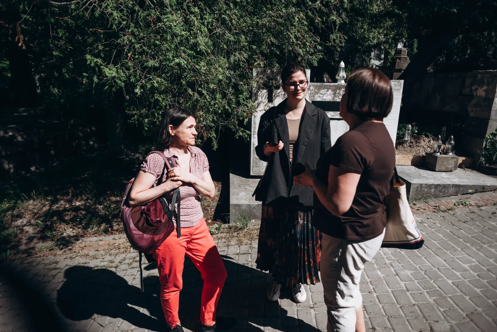
That’s why they are creating an online map of burials. Their goal is to ensure that the next generations don’t have to start the search from scratch. Currently, in Ukraine, a historian of mathematics is rather a calling than a separate job. We don’t have an official specialization in it: if you want to defend a thesis, you have to choose either mathematics or history. It isn’t easy to combine these two disciplines.
“Science historians are usually more focused on researching the development of ideas. But we are working with people a lot: reconstruct biographies, search for documents, research how mathematical communities took shape,” Olena says.
Despite that, the history of mathematics has a scientific life of its own. Researchers publish papers, hold seminars, organize conferences, and work under the tutelage of Yaroslav Prytula, who has been developing this field in Lviv for many years.
Myron Zarytskyi — a bridge between two mathematical traditions
The researchers linger at Myron Zarytskyi’s grave a bit longer. From their point of view, he was one of the key figures in Ukrainian mathematics in interwar Lviv. “It’s very important for us to tell about Ukrainian mathematicians specifically,” Iryna Banach says. “There weren’t many because Ukrainians had much fewer opportunities to receive mathematical education at that time.”
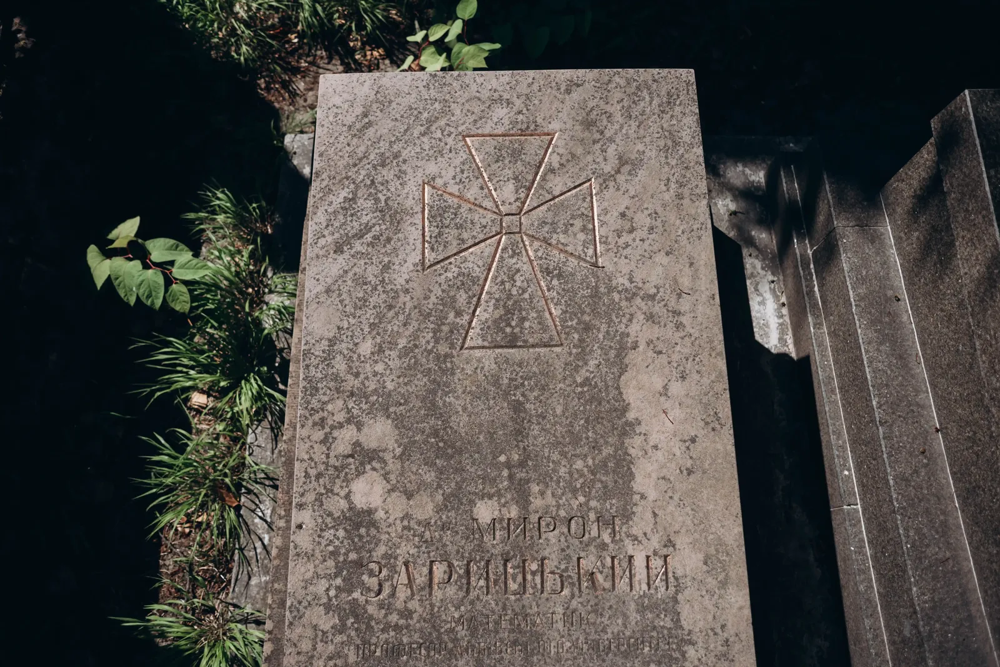
While telling us about Zarytskyi, Iryna also mentions two other Ukrainian researchers: Volodymyr Levytskyi and Mykola Chaikovskyi. Together with Zarytskyi, they form “the Galician³ Trinity” of Ukrainian mathematicians. All three were working within the Taras Shevchenko Scientific Society, teaching at Ukrainian gymnasia, and, despite the limited opportunities for an academic career, were developing a Ukrainian school of mathematics. Today, bas reliefs with their portraits adorn the main building of the Ivan Franko Lviv National University.
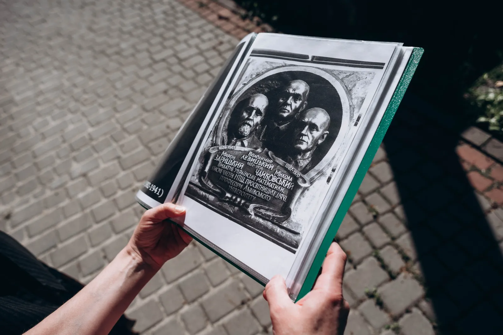
According to his contemporaries’ recollections, Zarytskyi looked stern, but he was a person of strong convictions. If someone took the liberty of insulting Ukraine or Ukrainians during a conversation, he demonstratively stopped and walked away. Zarytskyi was teaching at a gymnasium where Stanisław Lem⁴ was one of his students. The writer mentioned his teacher later in his memoir “The High Castle.”⁵
His daughter, Kateryna Zarytska spent many years in Soviet concentration camps along with her husband, Mykhailo Soroka. When Kateryna gave birth to her son while in prison, Myron Zarytskyi managed to take the infant home and practically raised the grandson Bohdan himself; Bohdan later became a prominent Ukrainian graphic artist.
A memorial plaque dedicated to the Scottish Book was officially unveiled during the COVID pandemic, on Myron Zarytskyi’s birthday. It’s symbolic that his great-grandson took off the veil.
From mathematicians to philosophers: the grave of Kazimierz Twardowski
The researchers don’t rush their tours. A tour may last up to three hours, sometimes even longer. “Once, we were leading a tour in pouring rain. Only one participant stayed to the end; she wasn’t a mathematician, just very interested. There’s a lot to tell indeed,” Iryna shares.
Not all representatives of the Lviv School of Mathematics have graves that one can show to visitors. During the tour, the researchers mention three professors — Antoni Łomnicki, Włodzimierz Stożek, and Stanisław Ruziewicz — who died during the Massacre of Lviv Professors. On the night of July 3–4, 1941, the Nazis murdered over forty Lviv scientists and their family members on the Vulka Hills⁶. Some mathematicians of the Lviv School of Mathematics were among them. Today, a memorial monument commemorates the location of the executions, but there are no separate burials that could be included in the tour. But still, the researchers tell visitors about them, because the history of mathematics in Lviv wouldn’t be full without this tragic page.
The next stop on the tour can be unexpected — after mathematicians, the tour leads to the grave of the philosopher Kazimierz Twardowski. But, as we’ve already explained, future mathematicians, physicists, and chemists were studying at the Faculty of Philosophy, where all the students had to study philosophy; so the history of the Lviv School of Mathematics is tightly connected to the history of the Lviv-Warsaw School — one of the most influential intellectual currents in Central-Eastern Europe, founded by Kazimierz Twardowski.
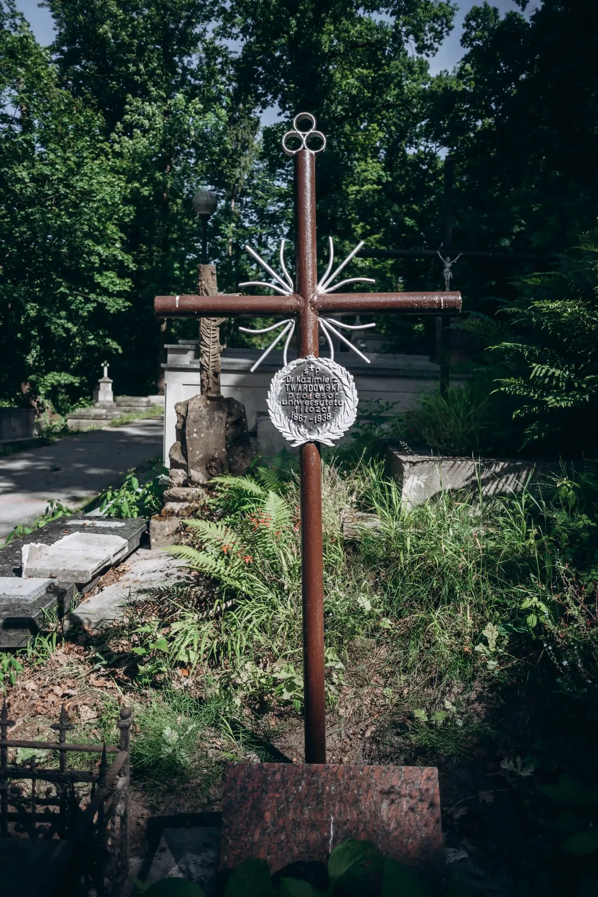
Twardowski moved to Lviv from Vienna at the end of the 19th century and quickly became one of the key figures in the university’s life. Besides holding lectures on philosophy, logic, and psychology, he had a much broader goal — to change the educational culture itself. He was of the opinion that philosophy shouldn’t be a discipline restricted to future scientists. He advocated teaching the basics of philosophical thinking in schools. For this reason, he was actively developing a course titled “Propedeutics of Philosophy,” an introduction of sorts on how to think, pose questions, and present arguments in favor of your position.
His role in opening university education for women was no less important. Twardowski became one of the most persistent advocates of women’s right to study at a university. At his initiative, special preparatory courses for women were organized, enabling them to receive the required education before universities officially opened to women. The researchers tell us how, even recently, they’ve found in the archives the lists of attendees for these courses and the subjects they were studying. Twardowski also supported the development of women's school education, since university admission was impossible without passing the matura⁷.
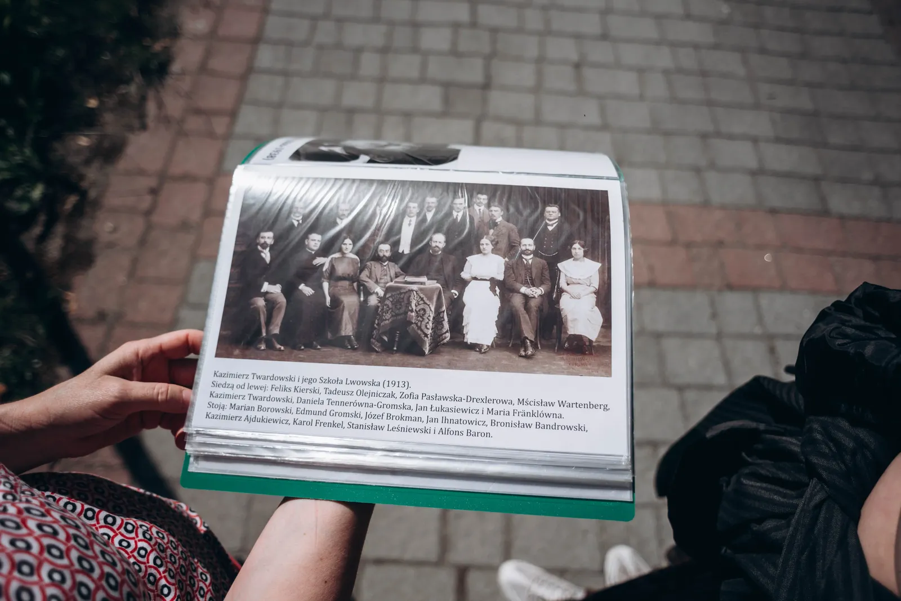
Twardowski’s influence was felt far beyond the university. He established a philosophical society and a scientific magazine and organized open lectures that anyone could attend. His popularity was so great that university auditoria didn’t have enough room for all the attendees. He had to hold his lectures at the great hall of the Musical Institute — in a building where the Lviv Philharmonic is currently located. Despite his popularity, Twardowski was always a very demanding professor. If a student arrived late to the lecture, the door was closed to them.
Twardowski was an official promoter of Stefan Banach’s doctoral thesis, although he wasn’t a mathematician. It was due to the university's formalities: at that time, only an “ordinary professor,” the highest professorial rank, could present a thesis for a formal defense. There was no such professor at the Faculty of Mathematics at that time, so Twardowski was invited for the role.
Many talented math students transferred to study under Twardowski, especially female students, the researchers say. Even those who had a chance for a career in mathematics often preferred doctoral studies under his supervision. Hugo Steinhaus, one of the founding members of the Lviv School of Mathematics, explained it simply: Twardowski had an outstanding pedagogic talent. He could explain complex things so clearly and captivatingly that he literally drew students to him.
At his seminars, students didn’t just listen to lectures. They chose topics themselves, offered their own ideas, disputed, and the professor helped them develop their fields of interest. That’s why the Lviv-Warsaw School was never purely philosophical. It became an environment where ideas on the crossroads of several sciences emerged. Psychology, logic, mathematics, and natural sciences — in his opinion, all of those should mutually enrich each other. He regularly visited gatherings of the mathematical society, and mathematicians visited meetings of the philosophical society.
The Scottish Book still lives
While we are walking between the graves to our next destination, Olena and Iryna tell us another story that probably best explains why the Lviv School of Mathematics isn’t only about the past. In Banach’s time, in the 1930s, mathematicians used to gather at the Scottish Cafe. There, the famous Scottish Book was born — a notebook where they wrote down unsolved mathematical problems and offered rewards for those who would solve them.
The Book became a legend after WWII. It was republished, researched, and dozens of papers and books were written about it. Something more unexpected was done in Lviv, however. When, in 2014, a modern Scottish Cafe was opened in the same building where the historical cafe once existed, a copy of the Scottish Book was created for it. A couple of blank pages were left at the end, so anyone could volunteer to continue its history.
At first, people wrote down their best wishes or impressions there, or simply noted that they liked the cafe’s atmosphere. But later, Lviv mathematicians decided to restore the book’s true sense. During a conference dedicated to Kazimierz Kuratowski — one of the most prominent representatives of the Lviv School of Mathematics, the author of classical papers in topology, and a longtime professor at the University of Warsaw— they launched a contemporary continuation of the Scottish Book. Like in the historical original, authors of new problems could offer rewards for solving them — anything from a bottle of wine to a living goose.
New math problems began to be recorded both on paper and on the MathOverflow website, where researchers from all over the world could see them. In 2017, during a conference in Lviv, three postgraduates from Wroclaw wrote a new problem in the modern Scottish Book and offered a traditional reward for its solution. Later, the problem was posted on MathOverflow, where Terence Tao, a laureate of the Fields Medal — often called the Nobel Prize in Mathematics — saw it. Tao not only solved the problem but also proposed a better solution which aroused excitement in the mathematical community. One of the comments under the solution succinctly captured his colleagues' reaction: “Jesus, you make it sound so easy!”
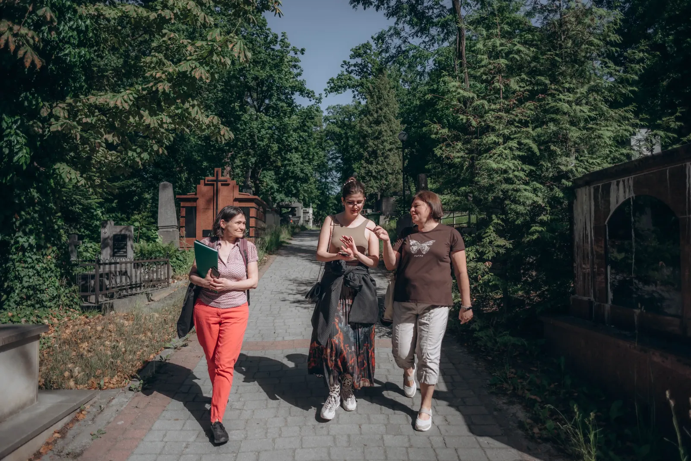
In a couple of years, in 2023, during a mathematical conference in Warsaw, the authors of the problem had an opportunity to give the promised prize — a bottle of mead — to Terence Tao in person.
In 1936, Stanisław Mazur recorded one of the most well-known mathematical problems in the Scottish Book and promised a live goose to anyone who would solve it. 36 years later, Swedish mathematician Per Enflo received this reward from the hands of Stanisław Mazur himself. It’s symbolic that the contemporary Lviv Mathematical Society also gave a goose to Terence Tao — a sculpture created by Ustia Soroka, a great-granddaughter of Myron Zarytskyi.
While we are mentioning these stories, a question arises about the phenomenon of the Lviv School of Mathematics itself — why was it that, at one point, people who were to change the global mathematics gathered in Lviv? The researchers point to a couple of important factors. Lviv itself is one of them. The city wasn’t the chief academic center, and so people took more liberties with formalities. It was in Lviv that a person without all the formal academic degrees could be invited to work if they had a prominent talent. This happened to Stefan Banach. The academic career of Stanisław Mazur wasn’t all that typical either. A person’s capabilities were sometimes more important here than bureaucratic requirements.
But liberty wasn’t enough. Even earlier, mathematician Józef Puzyna began consciously building a strong mathematical community in Lviv. He invited promising scientists, supported younger colleagues, and created conditions where a new school could arise. It was Puzyna who invited Hugo Steinhaus to Lviv. And Steinhaus, in turn, discovered Stefan Banach's talent.
The intriguing story of the search for Janiszewski’s grave
The next grave we are approaching was found thanks to one of the records in the new Lviv Scottish Book. “We take pictures of its pages to post them on the website. Among those records — both mathematical and non-mathematical — very interesting stories sometimes surface”, Olena says.
Once, they’ve met an Australian woman, Kimmy Hinton, this way. She works as a pharmacist. While a student, Kimmy was fascinated by Maria Skłodowska-Curie, and later, the mathematician Zygmunt Janiszewski suddenly caught her attention. She started collecting anything she could find about him; she cut out newspaper articles, copied archived documents, printed photographs, and collected biographical materials. Eventually, she created a whole book dedicated to Janiszewski and even gave a copy to the Lychakiv Cemetery. “Obviously, she wasn’t a mathematician, but she understood very well just how important Janiszewski was to the scientific history”, Iryna adds.
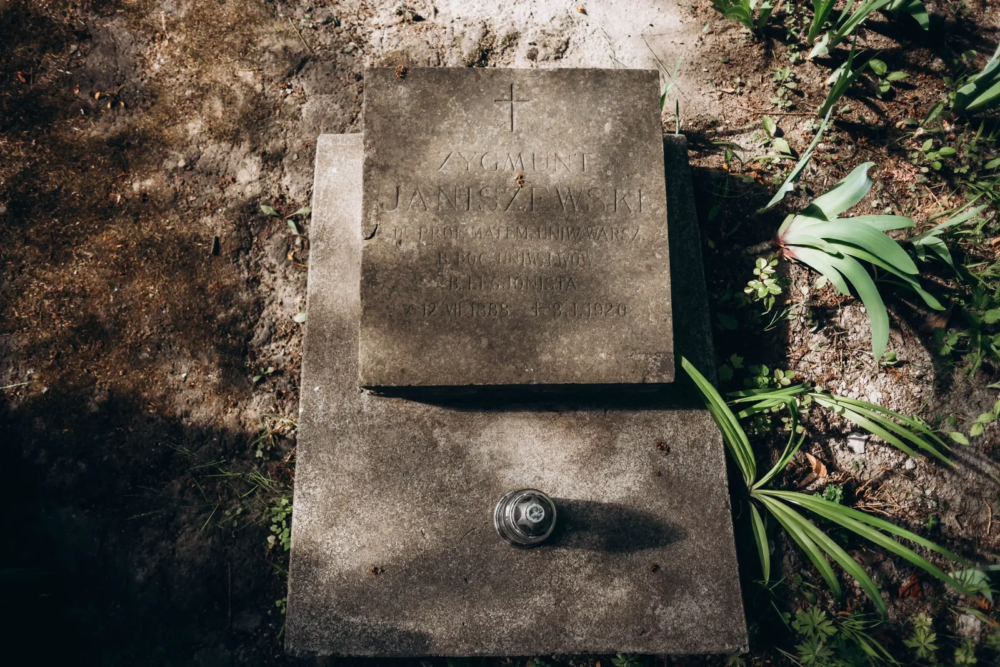
Janiszewski proposed a program to develop mathematics in Poland after WWI. Instead of trying to work in all areas at once, he called for focusing on a couple of fields where Polish researchers already had a strong presence. He also insisted on supporting young scientists and creating specialized scientific magazines. In Warsaw, the Fundamenta Mathematicae was established — the first specialized mathematical magazine in the world, dedicated to a specific field of research, set theory and its applications. Nine years later, in Lviv, Stefan Banach and Hugo Steinhaus established Studia Mathematica, which became one of the most influential magazines in functional analysis.
Janiszewski didn’t live to see his ideas come to life, however. On Christmas 1919, he went to Lviv, where his fiancée was waiting for him. The train made a long stop in the winter fields on the way. Not long before that, Janiszewski had suffered from the Spanish flu and probably hadn’t recovered fully. After that exhausting voyage, he fell severely ill and died in Lviv on January 3, 1920, only 31 years of age.
Kimmy decided to visit Lviv exactly one hundred years after his death — on January 3, 2020. She knew the cemetery field number and the grave number, but the grave itself didn’t survive. Kimmy laid flowers at the overgrown spot and went to the cemetery’s administration. She flipped through her book on Janiszewski, told them about him, and convinced them that this man deserved at least an information plate.
After she left, the employees thoroughly examined the spot once again and, indeed, found an old stone plate completely overgrown with moss. Everyone was initially convinced it was just a fragment of a neighboring gravestone, but when they turned it over, they found it was Janiszewski’s grave plate. The inscriptions were well-preserved. They cleaned the plate and, not long after that, placed it next to his burial. And Iryna and Olena took care of the QR code with information. Iryna Banakh found Kimmy and notified her that the grave had been found; the woman burst into tears of joy.
Volodymyr Levytskyi and the creation of the Ukrainian language for mathematics
We continue with the topic of the “Galician Trinity” as we approach the grave of Volodymyr Levytskyi. If Zarytskyi became a bridge between the Ukrainian and Polish mathematical communities, Levytskyi was solving a different problem — how to talk about mathematics in Ukrainian. At the turn of the 19th and 20th centuries, there was no established mathematical terminology in Ukrainian. If botanists could travel around villages and record folk names for plants, as Olena Hryniv jokes, you can’t “go and look for a folk name for a trapezium.”
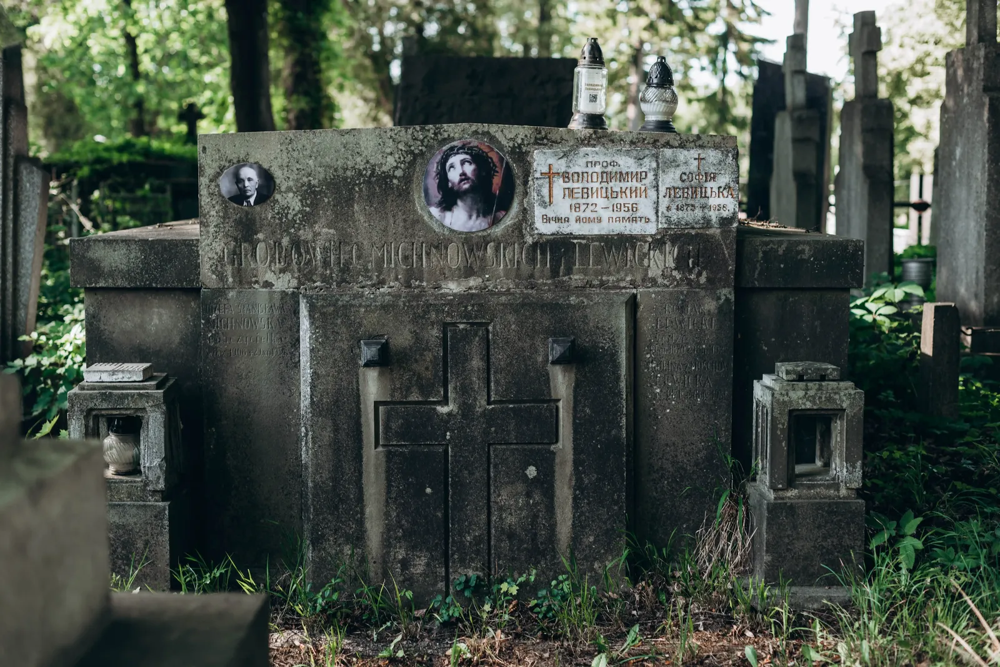
Levytskyi translated textbooks, developed terminology, edited mathematical papers, and wrote mathematical papers in Ukrainian. His work was among the first mathematical papers published in Ukrainian in the Proceedings of the Shevchenko Scientific Society.
A long-term Head of the Section of Mathematics, Natural History, and Medicine at the Shevchenko Scientific Society, he maintained communication with scientists across Ukraine, edited scientific publications, and worked tirelessly to establish Ukrainian as a fully-fledged scientific language. At the same time, his interests extended far beyond mathematics. Levytskyi wrote papers on physics and astronomy and compiled textbooks on physics. That’s why, nowadays, both mathematicians and physicists are equally eager to call him “one of their own.”
Mykola Chaikovskyi: mathematics that cost him his freedom
The biography of Mykola Chaikovskyi clearly illustrates just how dramatic the fate of Ukrainian scientists of the first half of the 20th century was. The son of writer Andrii Chaikovskyi, he was one of those Ukrainian mathematicians who believed that, after the events of the Revolution, it would be possible to develop Ukrainian science in the “Large Ukraine” — this was the name for Ukrainian lands that were part of the former Russian Empire, used in Halychyna at that time. Chaikovskyi first went to teach in Kamianets-Podilskyi, then to Odesa.
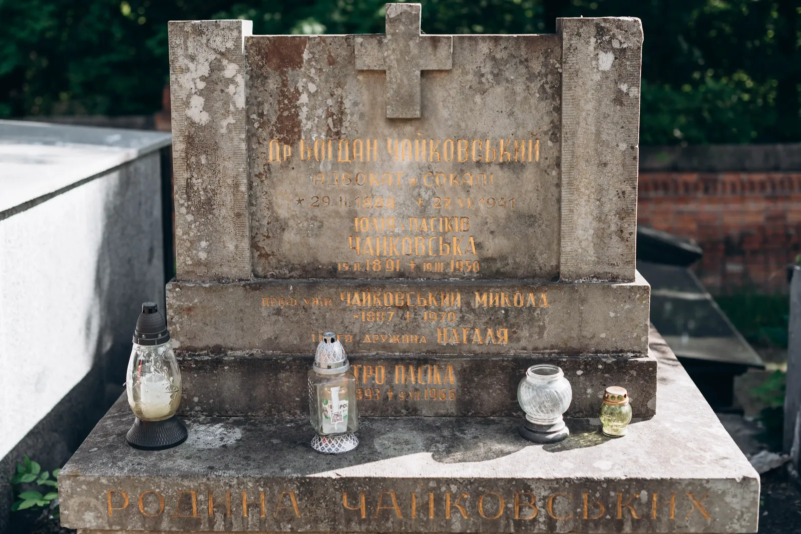
In letters to his father, he first wrote that things were working out fine. But shortly after that, the situation changed. Chaikovskyi was blamed for anti-Soviet activities and sentenced to ten years in prison. After serving his sentence, he couldn’t return to Lviv for a long time. Only many years later did Chaikovskyi teach mathematics at Lviv University. “He was teaching my mom”, Iryna Banakh remembers; her mom graduated from the Faculty of Physics at Lviv University.
When our walk comes to an end, we realize this route won’t ever be complete. New names still appear on the map of Lviv mathematicians, lost graves are found, archival documents reveal new biographies, and relatives send photographs and family stories.
Maybe the most important thing in this project isn’t the QR codes. They only help make visible history that could have stayed buried under a layer of moss forever, like Zygmunt Janiszewski’s gravestone. In truth, this project is about returning the memory — because behind every QR code, there are years of work in the archives, serendipitous finds, international acquaintances, and dozens of people who are helping to bring the history of science in Lviv back to life.
Footnotes
1. Despite sharing a name, mathematician Iryna Banakh isn't related to Stefan Banach (their last names are spelled differently due to Stefan being a Pole, and Iryna Ukrainian, but they sound the same). She received this last name after her marriage, and her family hasn't yet traced any relation to Stefan.
2. The Lychakiv Cemetery is the oldest functioning cemetery in Lviv, founded in 1786. It was considered the most prestigious burial site in the city since its founding, and by the second half of the 19th century, it had become a place for the honorary burial of prominent Lviv citizens. Scientists were among them. It's used for this purpose to this day, at the same time functioning as a museum.In Soviet times, however, many older gravestones and inscriptions were lost due to inadequate care and lack of oversight, and their locations were forgotten, so historians and the museum employees now have to conduct investigations to rediscover some of them.
3. Halychyna, or Galicia (a Latinized form), is a historical region of Western Ukraine. Lviv is its historical center.
4. Stanisław Lem is a Polish sci-fi author of global renown.
5. The book is titled after the highest hill in Lviv and an eponymous park. A medieval castle stood there until Lviv was annexed by the Austrian Empire in 1772, when almost all of its fortifications were demolished.The book was translated into English as "Highcastle: A Remembrance" by Michael Kandel.
6. Vulka Hills are a historical location in Lviv.
7. Matura is a Latin term for the final school exams and the formal document certifying the completion of school education, obtained by passing them. The term is still used in Poland and some other countries, and was used in Lviv at that time.
The reportage is published with the support of the Alfred P. Sloan Foundation.